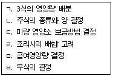

한식조리기능사 (2004-07-18 기출문제)
1과목: 식품위생 및 법규
1. 식품위생법의 주요한 목적과 가장 거리가 먼 것은?
- 식품영양의 질적 향상 도모
- 전염병에 관한 예방 관리
- 국민보건의 증진에 기여
- 식품으로 인한 위생상의 위해 방지
(정답률: 61%)

2. 식품위생법상 집단급식소에 대한 설명 중 올바른 것은?
- 일시적으로 불특정 다수인에게 음식물을 공급하는 영리 급식시설
- 계속적으로 특정 다수인에게 음식물을 공급하는 비영리 급식시설
- 일시적으로 불특정 다수인에게 음식물을 공급하는 비영리 급식시설
- 계속적으로 특정 다수인에게 음식물을 공급하는 영리 급식시설
(정답률: 71%)
3. 식품위생법규상 허위표시·과대광고 범위에 속하지 않는 것은?
- 질병의 치료에 효능이 있다는 내용
- 공인된 제조방법에 대한 내용
- 외국어의 사용 등으로 외국제품으로 혼동할 우려가 있는 표시·광고
- 허가받은 사항과 다른 내용의 표시·광고
(정답률: 73%)
4. 식품위생법에서 다루고 있지 않는 내용은?
- 식품첨가물을 넣은 용기
- 식품저장 중 식품에 직접 접촉되는 기계
- 농업에서 식품의 채취에 사용되는 기구
- 화학적 수단에 의하여 분해반응 이외의 화학반응을 일으켜 얻어진 식품첨가물
(정답률: 80%)
5. 식품위생법 규정에 의한 "신고를 하여야 하는 변경사항"에 해당하지 않는 것은?
- 즉석판매제조·가공업을 하는 경우 즉석판매제조, 가공 대상 식품 중 식품의 유형을 달리하여 새로운 식품을 제조·가공하고자 하는 경우
- 식품자동판매기영업을 하는 경우 동일 읍·면·동에서 식품자동판매기의 설치대수를 증감하고자 하는 경우
- 식품첨가물이나 다른 원료를 사용하지 아니한 농·임·수산물 단순가공품의 건조 방법을 달리하고자 하는 경우
- 식품 운반업의 경우 냉장·냉동차량을 증감하고자 하는 경우
(정답률: 56%)
6. 다음은 식품위생과 관계있는 것들이다. 이 중 미생물과 거리가 먼 것은?
- 세균
- 효모
- 곰팡이
- 기생충
(정답률: 83%)
7. 부패된 어류에 나타나는 현상은?
- 눈알이 들어가고 맑지 않다.
- 아가미 색깔이 선홍색이다.
- 비늘에 광택이 있고 점액이 적다.
- 육질에 탄력이 있다.
(정답률: 91%)
8. 생선이나 조개류의 생식과 가장 관계 깊은 식중독은?
- 살모넬라 식중독
- 병원성 대장균 식중독
- 장염비브리오 식중독
- 포도상구균 식중독
(정답률: 76%)
9. 다음 세균성 식중독 중 신경증상을 일으키는 것은?
- 아리조나 식중독
- 리스테리아 식중독
- 클로스트리디움 보툴리늄 식중독
- 장염비브리오 식중독
(정답률: 80%)
10. 대합조개의 독성분은?
- 솔라닌(solanine)
- 콜린(choline)
- 삭시톡신(saxitoxin)
- 무스카린(muscarine)
(정답률: 86%)
11. 곰팡이의 대사 산물에 의해 사람이나 동물에 질병이나 생리적 장애를 유발하는 물질군은?
- 식물성 자연독
- 동물성 자연독
- 진균독
- 권패류독
(정답률: 66%)
12. 식품 첨가물 중 유해한 착색료는?(오류 신고가 접수된 문제입니다. 반드시 정답과 해설을 확인하시기 바랍니다.)
- 붕산(boric acid)
- 롱가릿(rongalite)
- 아우라민(auramine)
- 둘신(dulcin)
(정답률: 43%)
13. 사용이 금지된 감미료는?
- 사카린나트륨(Saccharin sodium)
- 아스파탐(aspartame)
- 페릴라틴(Peryllartine)
- 디-소르비톨(D-sorbitol)
(정답률: 39%)
14. 식중독 발생시 보호자의 조치사항 중 잘못된 것은?
- 식중독 발생 사실을 신고한다.
- 즉시 환자를 의사에게 진단하게 한다.
- 환자의 가검물을 원인조사시 까지 보관한다.
- 항생제를 복용시킨다.
(정답률: 86%)
15. 부패가 진행됨에 따라 식품은 특유의 부패취를 내는데 그 성분이 아닌 것은?
- 인돌
- 황화수소
- 아세톤
- 휘발성 아민
(정답률: 76%)
2과목: 식품학
16. 상온에서 일반적으로 식물성 유지는 액체상태로, 동물성 유지는 고체 상태로 존재하는 가장 중요한 이유는?
- 구성 지방산의 종류에 따른 발연점의 차이로
- 구성 지방산의 종류에 따른 융점의 차이로
- 구성 지방산의 종류에 따른 가소성의 차이로
- 구성 지방산의 종류에 따른 유화성의 차이로
(정답률: 43%)
17. 일반적으로 프로비타민 A를 많이 함유하는 식품은?
- 효모
- 녹엽채소
- 콩나물
- 감자
(정답률: 68%)
18. 산과 당이 존재하면 특징적인 젤(gel)을 형성하는 능력을 가진 것은?
- 글리코겐(glycogen)
- 섬유소(cellulose)
- 펙틴(pectin)
- 전분(starch)
(정답률: 62%)
19. 숙주나물을 올바르게 설명한 것은?
- 완두를 싹 틔운 것
- 납두를 싹 틔운 것
- 대두를 싹 틔운 것
- 녹두를 싹 틔운 것
(정답률: 78%)
20. 육류의 색의 안정제, 밀가루의 품질개량제, 과채류의 갈변과 변색 방지제로 이용되는 비타민은?
- 나이아신(niacin)
- 리보플라빈(riboflavin)
- 티아민(thiamin)
- 아스코르빈산(ascorbic acid)
(정답률: 58%)
21. 어유와 일반 식물유의 차이점은?
- 어유는 포화지방산이 많고 요오드가가 적다.
- 어유는 불포화지방산이 적고 요오드가가 높다.
- 어유에는 불포화지방산이 많고 혼합 글리세리드이다.
- 어유는 불포화지방산이 적고 요오드가가 적다.
(정답률: 44%)
22. 효소와 기질식품의 연결이 잘못된 것은?
- 레닌(rennin) - 우유
- 우레아제(urease) - 육류
- 아밀라아제(amylase) - 전분
- 파파인(papain) - 지방
(정답률: 60%)
23. 아밀로펙틴(amylopectin)의 함량이 가장 많은 것은?
- 멥쌀
- 보리
- 찹쌀
- 좁쌀
(정답률: 78%)
24. 빵의 노화시 생겨나는 현상이 아닌 것은?
- 빵의 외피가 딱딱해진다.
- 풍미를 상실하고 독특한 노화냄새를 낸다.
- 빵의 흡수성이 증가한다.
- 내부의 경도가 증가하여 외력이 증가되므로 부스러지기 쉽다.
(정답률: 76%)
25. 녹색채소를 삶을 때 녹황색으로 변하는 이유는?
- 엽록소의 Mg이 Cu로 치환 되었으므로
- 엽록소가 페오피틴(pheophytin)으로 변했으므로
- 엽록소의 H가 Cu로 치환되었으므로
- 엽록소가 클로로필라이드(chlorophyllide)로 변했으므로
(정답률: 45%)
26. 식품과 쓴맛성분이 맞지 않는 것은?
- 양파껍질 - 히스타민(histamine)
- 감귤류껍질 - 나린진(naringin)
- 맥주 - 휴물론(humulone)
- 오이꼭지 - 쿠쿠르비타신(cucurbitacin)
(정답률: 56%)
27. 생선의 육질이 육류보다 연한 이유는?
- 미오글로빈 함량이 적으므로
- 미오신과 액틴의 함량이 많으므로
- 콜라겐과 엘라스틴의 함량이 적으므로
- 불포화지방산의 함량이 많으므로
(정답률: 57%)
28. 식품에 있는 영양소 중 생리작용을 조절하는 것이 아닌 것은?
- 단백질
- 무기질
- 지방
- 비타민
(정답률: 50%)
29. 대두에 가장 많은 단백질은?
- 글로불린
- 알부민
- 글루텔린
- 프롤라민
(정답률: 53%)
30. 전분의 이화학적 처리 또는 효소 처리에 의해 생산되는 제품이 아닌 것은?
- 가교 전분
- 고과당(high fructose) 옥수수시럽
- 덱스트란
- 싸이클로덱스트린
(정답률: 39%)
3과목: 조리이론과 원가계산
31. 다음과 같이 조리가 바람직하지 않게 된 이유로 부적당한 것은?
- 튀긴 도넛에 기름 흡수가 많음 : 낮은 온도에서 튀겼기 때문
- 생선을 굽는데 석쇠에 붙어 잘 떨어지지 않음 : 석쇠를 달구지 않았기 때문
- 오이무침의 색이 누렇게 변함 : 식초를 미리 넣었기 때문
- 장조림 고기가 단단하고 잘 찢어지지 않음 : 물에서 먼저 삶은
(정답률: 63%)
32. 밀가루를 계량하는 방법으로 올바른 것은?
- 체에 친 후 스푼으로 수북히 담은 뒤 주걱(spatula)으로 싹 깎아서 측정한다.
- 계량컵에 넣고 눌러주어 쏟았을 때 컵의 형태가나타나도록 하여 측정한다.
- 체에 친 후 계량컵을 평평하게 되도록 흔들어 준 다음 측정한다.
- 계량컵에 담고 살짝 흔들어 수평이 되게 한 다음 측정한다.
(정답률: 63%)
33. 일반적으로 채소의 조리시 가장 손실되기 쉬운 성분은?
- 비타민 E
- 비타민 A
- 비타민 B6
- 비타민 C
(정답률: 82%)
34. 음식의 색을 고려하여 녹색채소를 무칠 때 가장 나중에 넣어야 하는 조미료는?
- 소금
- 고추장
- 설탕
- 식초
(정답률: 77%)
35. 생선 비린내를 없애는 방법과 거리가 먼 것은?
- 파, 마늘, 생강 등을 사용한다.
- 우유를 사용한다.
- 물로 씻어 낸다.
- 설탕을 사용한다.
(정답률: 84%)
36. 식물성 액체유를 경화 처리한 고체 기름은?
- 버터
- 마요네즈
- 라드
- 쇼트닝
(정답률: 57%)
37. 담즙의 기능을 설명한 것 중 틀린 것은?
- 유화작용
- 약물 및 독소 등의 배설작용
- 당질의 소화
- 산의 중화작용
(정답률: 38%)
38. 침에 들어있는 소화효소의 작용은?
- 지방을 지방산과 글리세린으로 분해한다.
- 녹말을 맥아당으로 변화시킨다.
- 단백질을 아미노산으로 분해한다.
- 수용성 비타민을 분해한다.
(정답률: 58%)
39. 다음 설명 중 신선란은?
- 수양난백이 농후난백보다 많다.
- 난황이 넓적하게 퍼진다.
- 삶았을 때 난황표면이 쉽게 암록색으로 변한다.
- 기실부가 거의 생성되지 않았다.
(정답률: 59%)
40. 다음 중에서 직접비의 합계액은?
- 제조원가
- 총원가
- 판매가격
- 직접원가
(정답률: 65%)
41. 주방에서 후드(hood)의 가장 중요한 기능은?
- 실내의 습도를 유지시킨다.
- 증기, 냄새 등을 배출시킨다.
- 실내의 온도를 유지시킨다.
- 바람을 들어오게 한다.
(정답률: 90%)
42. 용량을 측정하는 단위에서 1쿼터(quart)는 약 몇 컵이 되는가?
- 약 1컵
- 약 2컵
- 약 4컵
- 약 3컵
(정답률: 50%)
43. 양갱을 만들 때 필요한 재료가 아닌 것은?
- 한천
- 팥앙금
- 설탕
- 젤라틴
(정답률: 68%)
44. 계산 경제성의 원칙을 다른 말로 무엇이라고 하는가?
- 간접성의 원칙
- 중요성의 원칙
- 계산성의 원칙
- 비교성의 원칙
(정답률: 30%)
45. "사태찜, 족편, 꼬리곰탕, 쇠머리편육" 요리들은 육류조리의 어떤 원리를 특히 이용한 것인가?
- 콜라겐 결합조직의 젤라틴화
- 단백질의 열에 의한 응고
- 국물의 부드럽고, 진한 맛
- 오랜 시간의 가열에 의한 연화
(정답률: 64%)
46. 다음은 식단 작성의 순서이다. 맞게 연결된 것은?

- ㄷ→ㄴ→ㄱ→ㄹ→ㅂ→ㅁ
- ㄹ→ㄱ→ㄷ→ㄴ→ㅂ→ㅁ
- ㅁ→ㄱ→ㄴ→ㅂ→ㄷ→ㄹ
- ㄱ→ㄷ→ㄹ→ㄴ→ㅁ→ㅂ
(정답률: 51%)
47. 유지의 품질 저하에 대한 설명으로 맞는 것은?
- 불포화지방산이 많은 것은 공기의 산화를 받기 쉽다.
- 유지를 갈색 병에 넣어 두면 햇빛이 비치는 곳이라도 상관없다.
- 가열온도가 낮을수록 산화가 촉진된다.
- 스테인리스 냄비를 사용했을 때 산화가 가장 빠르다.
(정답률: 55%)
48. 수입쇠고기 두근을 30,000원에 구입하여 50명의 식사를 공급하였다. 식단가격을 2,500원으로 정한다면 식품의 원가는 몇 %인가?
- 12%
- 83%
- 42%
- 24%
(정답률: 46%)
49. 식품의 감별로 적합하지 않은 것은?
- 송이버섯 - 봉오리가 크고 줄기가 부드러운 것
- 달걀 - 표면이 거칠고 광택이 없는 것
- 감자, 고구마 - 병충해, 발아, 외상, 부패 등이 없는 것
- 생과일 - 성숙하고 신선하며 청결한 것
(정답률: 72%)
50. 피급식자의 영양소요량 결정에 고려해야 할 조건으로만 묶여진 것은?
- 연령, 성별, 노동강도
- 연령, 신장, 체중
- 연령, 노동강도, 신장
- 연령, 성별, 체중
(정답률: 57%)
4과목: 공중보건
51. 세계보건기구(WHO)의 중요 기능이 아닌 것은?
- 개인의 정신보건 향상
- 회원국에 대한 기술지원 및 자료공급
- 전문가 파견에 의한 기술자문 활동
- 국제적인 보건사업의 지휘 및 조정
(정답률: 77%)
52. 공기의 조성원소 중에 가장 많은 체적 백분율을 차지하는것은?
- 이산화탄소
- 질소
- 산소
- 아르곤
(정답률: 50%)
53. 잠복기가 가장 긴 전염병은?
- 파라티푸스
- 디프테리아
- 한센병
- 콜레라
(정답률: 65%)
54. 아메바에 의해서 발생되는 질병은?
- 장티푸스
- 이질
- 콜레라
- 유행성 간염
(정답률: 58%)
55. 집단감염이 잘 되는 기생충은?
- 회충
- 요충
- 구충
- 편충
(정답률: 51%)
56. 민물고기를 생식한 일이 없는 경우에 간흡충에 감염될 가능성이 있는 것은?
- 채소의 생식으로 감염
- 가재, 게 등의 생식으로 감염
- 요리 기구를 통해서 감염
- 공기전파로 감염
(정답률: 56%)
57. 자외선에 의한 인체 건강 장애와 거리가 먼 것은?
- 설안염
- 결막염
- 백내장
- 폐기종
(정답률: 77%)
58. 쓰레기 소각처리시 가장 위생적으로 문제가 되는 것은?
- 높은 열의 발생
- 사후 폐기물 발생
- 대기오염과 다이옥신
- 화재발생
(정답률: 89%)
59. 장티푸스에 대한 예방대책으로 적절하지 않은 것은?
- 검역을 강화한다.
- 환경위생관리를 강화한다.
- 보균자 관리를 강화한다.
- 예방접종을 강화한다.
(정답률: 35%)
60. 포자(아포) 형성균의 멸균에 알맞은 소독법은?
- 자비소독법
- 저온 소독법
- 고압증기멸균법
- 희석법
(정답률: 86%)